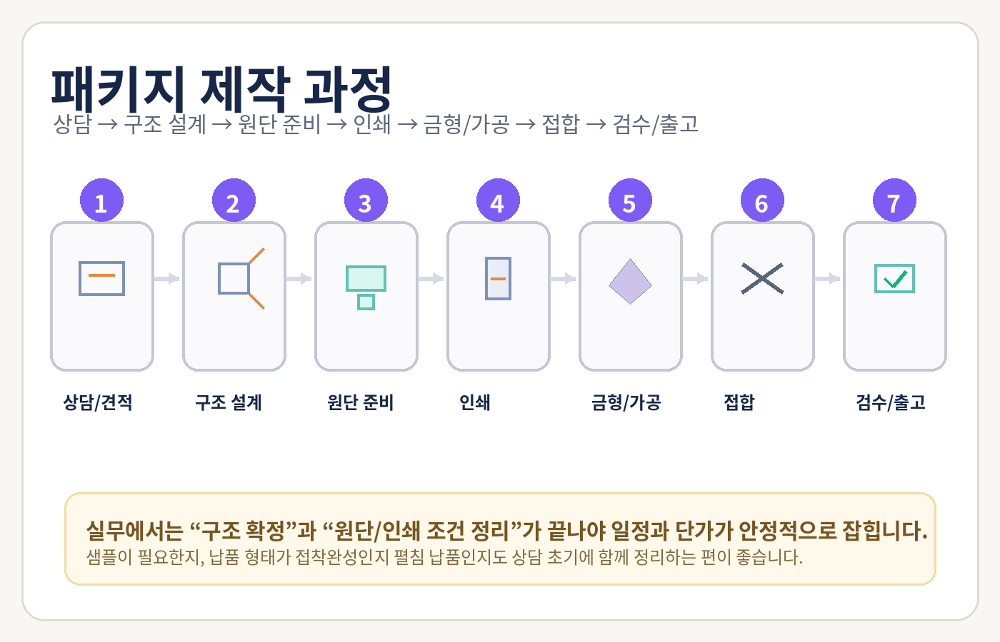

박스 제작 프로세스
박스 제작은 보통 상담 및 견적 → 구조 설계 → 원단 준비 → 인쇄 → 금형 제작 → 가공 및 접합 → 검수 및 납품 순으로 이어집니다. 브랜드 패키지의 경우 여기에 샘플 검토와 색상 수정 단계가 추가되기도 합니다.
박스 제작은 단순히 인쇄 한 번으로 끝나지 않습니다. 구조와 원단이 정리되고, 금형과 가공 조건이 맞아야 최종 결과물이 안정적으로 나옵니다. 아래 순서는 실무에서 가장 많이 사용하는 표준 흐름입니다.

박스 제작은 보통 상담 및 견적 → 구조 설계 → 원단 준비 → 인쇄 → 금형 제작 → 가공 및 접합 → 검수 및 납품 순으로 이어집니다. 브랜드 패키지의 경우 여기에 샘플 검토와 색상 수정 단계가 추가되기도 합니다.
이 단계에서 정보가 많이 빠질수록 견적 오차가 커집니다. 최소한 제품 규격, 수량, 배송 방식은 먼저 정리해 두는 것이 좋습니다.
제품에 맞는 박스 구조를 설계합니다. CAD 설계, 샘플 제작, 조립 테스트를 거치며 실제 사용성이 맞는지 확인합니다.
골판지 박스는 라이너지와 골심지를 결합해 원단을 만듭니다. 칼라박스는 선택한 원지와 코팅 여부에 따라 이후 인쇄 결과가 달라집니다.
디자인 요소를 실제 원단 위에 올리는 단계입니다. 제품 성격과 수량에 따라 플렉소, 오프셋, 디지털 인쇄 등 적합한 방식이 달라집니다.
맞춤 구조라면 칼날 금형을 제작합니다. 구조가 복잡할수록 금형 완성도가 조립성과 생산성에 직접 영향을 줍니다.
인쇄 후에는 다이컷, 접착, 스테이플, 타공, 접지 같은 후가공이 이어집니다. 이 공정에서 조립 편의와 최종 완성도가 결정됩니다.
최종 검수는 단순 불량 체크가 아니라 실제 납품 안정성을 확인하는 마지막 단계입니다.